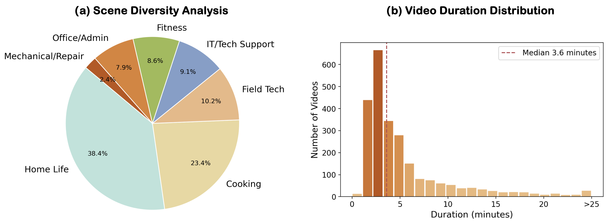

1City University of Hong Kong
2Huawei Research
3Chinese University of Hong Kong
4City University of Hong Kong (Dongguan)
ECCV 2026
*Joint first authors †Corresponding authors
While multimodal Large Language Models (MLLMs) excel at offline video understanding, an interesting question of how far they are from serving as a real-time procedural coach remains unknown. Such a role typically requires an MLLM to continuously monitor the execution, detect mistakes, and provide corrective guidance in a closed-loop interaction. In this paper, we construct GuideMe, the first multi-domain benchmark for streaming video that supports training and evaluation of MLLMs for closed-loop interactive task guidance. It comprises 2,458 videos spanning 223.7 hours across diverse domains, including cooking, object manipulation, daily-life guidance, and fitness, with 47,775 interaction samples covering next-step instructions, completion feedback, error detection, and corrective guidance. To evaluate existing models on GuideMe, we design a three-facet assessment framework to measure representative MLLMs, consisting of temporal-semantic bipartite matching for sequence-level alignment, behavioral classification for intervention timing, and LLM-as-a-Judge for content quality. Extensive experiments highlight a critical performance asymmetry: despite excelling at providing instructions, existing MLLMs consistently fail to identify execution errors and respond with corrective feedback.
GuideMe is split into GuideMe-Train (1,985 videos, 177.0 hours) and GuideMe-Test (473 videos, 46.7 hours); all reported evaluations use GuideMe-Test, while GuideMe-Train supports task-specific adaptation and is used only for the fine-tuned Qwen3-VL-8B result in the main results table.
| Dataset | Domain | #Videos | Hours | Step-level Instruction | Timed Feedback | Error Detection | Action-specific Correction | Closed-loop Interaction |
|---|---|---|---|---|---|---|---|---|
| Epic-Kitchen-100 | Cooking | 700 | 100 | ✓ | × | × | × | × |
| COIN | Diverse | 11,827 | 476 | ✓ | × | × | × | × |
| HoloAssist | Object Manip. | 2,221 | 166 | × | × | ✓ | ✓ | × |
| CaptainCook4D | Cooking | 384 | 94.5 | × | × | ✓ | × | × |
| QEVD-Fit-Coach | Fitness | 223 | 13.5 | ✓ | ✓ | ✓ | ✓ | × |
| Assembly101 | Assembly | 4,321 | 513 | × | × | ✓ | ✓ | × |
| EgoPER | Cooking | 386 | 28 | ✓ | × | ✓ | × | × |
| GuideMe | Diverse | 2,458 | 223.7 | ✓ | ✓ | ✓ | ✓ | ✓ |
Comparison of procedural video datasets. GuideMe supports closed-loop interactive task guidance across all five evaluation dimensions.
GuideMe bridges everyday routines and more complex assistance scenarios. Home Life and Cooking form the largest portion of the benchmark, accounting for 38.4% and 23.4% of the videos, while technical domains such as Field Tech and IT Support contribute 38.2%.
The videos range from 0.5 to 41.2 minutes, with an average duration of 5.5 minutes and a median of 3.6 minutes. This distribution covers concise step-level tasks while retaining long-form sequences for evaluating long-range temporal reasoning.

Measures sequence-level alignment by matching predicted guidance with ground-truth interventions in time and meaning.
Evaluates intervention timing and response behavior, including correct silence, false alarms, missing responses, and partly correct interventions.
Assesses the content quality of open-ended guidance responses, focusing on semantic correctness and actionable feedback.
| Model | Param. | Temporal Alignment | Response Behavior | ||||||
|---|---|---|---|---|---|---|---|---|---|
| sPrecision ↑ | sRecall ↑ | sF1 ↑ | CS ↑ | NR ↓ | FA ↓ | PC ↑ | Score ↑ | ||
| Proprietary Multimodal Models | |||||||||
| Doubao-Seed-1.8 | - | 30.6 | 47.5 | 36.8 | 8.8 | 6.1 | 34.8 | 44.2 | 38.8 |
| GPT-5.2 | - | 30.2 | 36.8 | 32.5 | 13.4 | 16.8 | 30.6 | 39.2 | 38.9 |
| Gemini 3 Pro | - | 39.3 | 36.9 | 36.5 | 17.5 | 22.0 | 19.0 | 41.5 | 44.8 |
| Gemini 3.1 Pro | - | 29.3 | 46.9 | 35.7 | 7.4 | 6.3 | 36.4 | 49.9 | 37.8 |
| Open-source Multimodal Models | |||||||||
| Qwen2.5-7B | 7B | 30.1 | 30.9 | 29.3 | 19.7 | 20.4 | 25.4 | 34.5 | 37.5 |
| Qwen3-VL-8B | 8B | 29.7 | 46.8 | 35.7 | 5.2 | 6.7 | 37.7 | 50.5 | 31.9 |
| Qwen3-VL-30B-A3B | 30B | 29.5 | 46.9 | 35.6 | 6.7 | 6.0 | 36.5 | 50.9 | 33.3 |
| Qwen3.5-397B-A17B | 397B | 38.4 | 20.2 | 21.7 | 35.2 | 37.9 | 7.9 | 19.0 | 45.7 |
| Open-source Multimodal Streaming Models | |||||||||
| VideoLLM-online | 8B | 22.3 | 41.1 | 28.7 | 0.0 | 0.0 | 43.6 | 56.4 | 22.6 |
| Dispider | 7B | 1.0 | 0.1 | 0.1 | 43.6 | 56.3 | 0.0 | 0.1 | 43.6 |
| StreamingVLM | 7B | 3.2 | 0.3 | 0.6 | 42.9 | 55.5 | 0.7 | 0.9 | 42.9 |
| LiveStar | 8B | 20.7 | 19.0 | 19.1 | 21.2 | 24.4 | 22.2 | 32.3 | 25.0 |
| MMDuet2 | 3B | 3.3 | 0.2 | 0.4 | 41.7 | 57.9 | 0.2 | 0.2 | 41.8 |
| Fine-tuned on GuideMe Train Set | |||||||||
| Qwen3-VL-8B† | 8B | 40.3 | 43.7 | 39.7 | 19.5 | 20.6 | 24.5 | 35.3 | 42.1 |
Main evaluation results on GuideMe. sPrecision is the sum of matched semantic similarities divided by active non-silent predictions, measuring intervention relevance; sRecall is divided by non-silent ground-truth responses, measuring required-intervention coverage; sF1 is their harmonic mean.
CS: Correct Silent, NR: No Response, FA: False Alarm, PC: Partly Correct. Score is the average instance-level score: CS receives 100, FA and NR receive 0, and PC receives an LLM-as-a-Judge quality score scaled to 0-100. † denotes fine-tuning on the GuideMe training split.
No baseline provides reliable streaming coaching. Aggressive models such as Gemini 3.1 Pro and Qwen3-VL-8B/30B-A3B respond frequently but trigger many false alarms, while conservative models such as Qwen3.5 speak much less often and miss many required interventions.
Scaling and streaming-oriented pretraining do not solve the task. Larger models do not consistently improve temporal alignment, and streaming models also struggle, with some over-responding and others collapsing toward near-silence.
Task-specific fine-tuning improves temporal alignment and response quality, but it also shifts the model toward more conservative behavior. Robust closed-loop coaching still requires jointly improving timing, intervention decisions, and content quality.